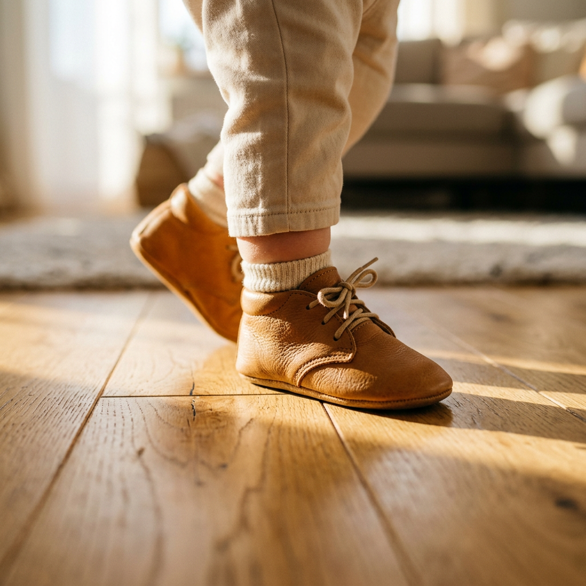
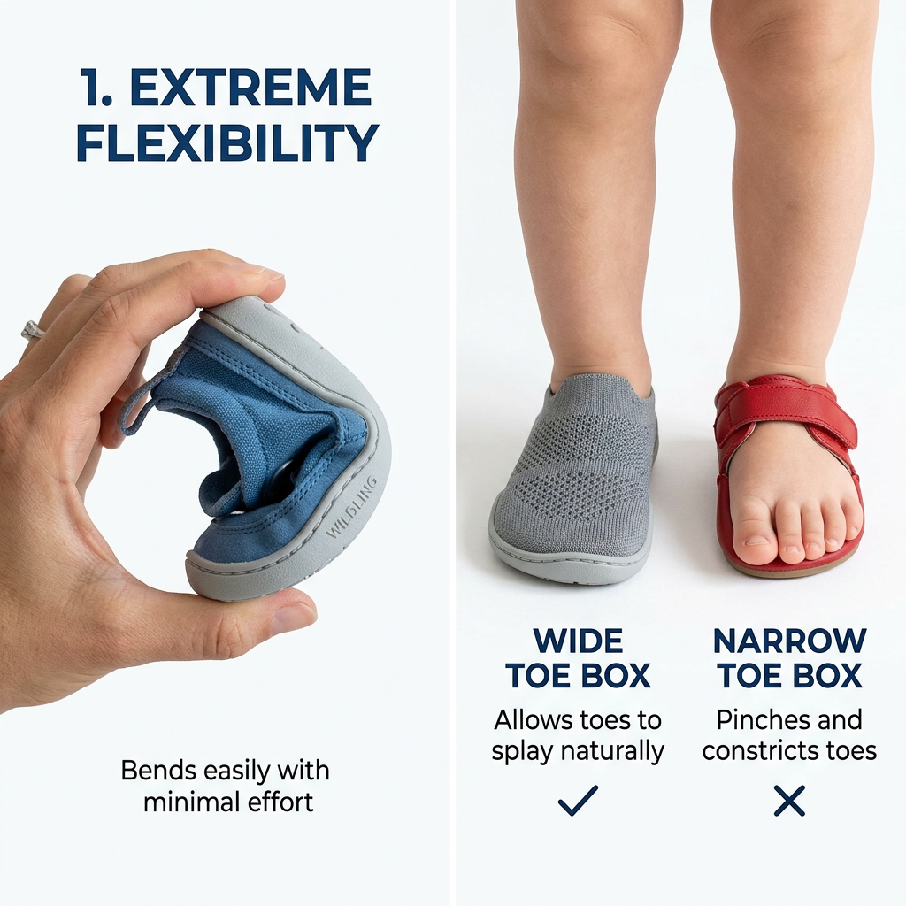

The Ultimate Guide to Choosing Baby Shoes: Protecting Your Little One’s First Steps
The Hidden Impact of Your Baby’s First Shoes
Watching your little one take those first, wobbly steps is a milestone every parent cherishes. However, beneath the excitement lies a critical responsibility: choosing the right footwear. Most parents are lured by adorable designs and miniature versions of adult sneakers, but the wrong choice can actually hinder your child's natural foot development. A baby's foot is not just a smaller version of an adult's; it is composed primarily of soft cartilage that is highly susceptible to deformation if restricted by improper shoes.
As a veteran in child development ergonomics, I have seen how poor footwear choices lead to balance issues, toe-curling, and even long-term gait problems. This guide is designed to cut through the marketing noise and provide you with a science-backed framework for selecting baby shoes that prioritize health, safety, and confidence.

When Does Your Baby Actually Need Shoes?
Before you rush to buy a dozen pairs, it is vital to understand the 'Barefoot is Best' philosophy. Pediatric podiatrists agree that infants should remain barefoot as much as possible when indoors. Being barefoot allows the toes to grip the floor, strengthening the muscles and ligaments while providing essential sensory feedback to the brain. This feedback loop is what helps your baby develop balance and coordination.
However, once your child begins to 'cruise' (walking while holding onto furniture) or takes their first independent steps outdoors, shoes become a necessity for protection. The primary role of a baby shoe is to protect the feet from cold surfaces, sharp objects, and uneven terrain—not to provide 'support' in the way adult shoes do.
The Essential Checklist for Healthy Foot Development
When you are ready to make a purchase, ignore the brand names and focus on these four non-negotiable features. High-intent buyers who prioritize these factors ensure their children have the best foundation for a lifetime of mobility.
1. Maximum Sole Flexibility
A baby shoe should be flexible enough that you can easily fold it in half or twist it with one hand. If the sole is too rigid, the foot cannot move through its natural range of motion. Look for lightweight rubber or high-quality suede soles that mimic the experience of being barefoot while offering a layer of protection.
2. The Wide Toe Box
Baby feet are naturally fan-shaped, being widest at the toes. Many fashion-forward shoes have narrow, tapered points that squeeze the toes together. This can lead to permanent structural changes. Always look for a 'wide toe box' that allows the toes to splay naturally. This splaying is crucial for maintaining balance during those early, unstable steps.
3. Breathable, Natural Materials
Baby feet sweat significantly more than adult feet relative to their size. Synthetic materials like plastic or cheap faux-leather trap moisture, leading to discomfort and fungal infections. Opt for premium leather, canvas, or breathable mesh. These materials are not only more durable but also stretch and mold to the unique shape of your baby's foot over time.
4. Secure Fastenings and Lightweight Construction
Heavy shoes act like weights on a baby’s ankles, making it harder for them to lift their feet and increasing the risk of trips. The shoe should be as light as possible. Additionally, ensure the fastening system—whether Velcro or elastic laces—is secure enough to prevent the shoe from slipping off, but not so tight that it restricts circulation.

How to Measure Baby Feet Like a Pro
Size is the most common area where parents go wrong. Because babies can’t articulate if a shoe is pinching, you must be proactive. Feet should be measured while the baby is standing, as weight-bearing causes the foot to expand.
- The Thumb Test: There should be approximately 1/2 inch (about a thumb’s width) of space between the end of the longest toe and the front of the shoe.
- The Pinky Test: You should be able to slide your pinky finger into the heel of the shoe comfortably. If it’s too tight, the shoe is too small; if there is a gap, it’s too large.
- Frequency: Baby feet grow at an incredible rate. Check the fit every 6 to 8 weeks to ensure they haven't outgrown their current pair.
Avoiding Common Footwear Pitfalls
One of the biggest mistakes parents make is using 'hand-me-down' shoes. While it is tempting to save money, shoes often take on the wear pattern of the previous owner. If the original child had a slight inward lean or gait eccentricity, those worn-out soles will force your baby’s foot into that same unhealthy position. Always invest in new footwear for the first walking stage to ensure a neutral starting point.
Final Verdict: Function Over Fashion
It is easy to get distracted by miniature boots or high-tops that look like adult streetwear. However, for a developing child, these are often too heavy and restrictive. Your priority should always be a soft-soled, lightweight, and wide-fitting shoe that stays out of the way of the foot's natural movement. By choosing quality over aesthetics, you are giving your child the gift of healthy physical development and the confidence to explore their world one step at a time.